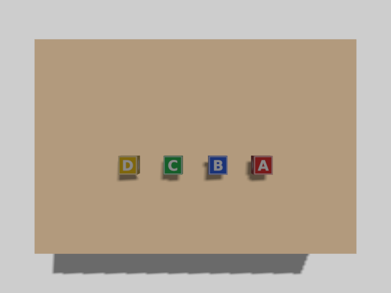
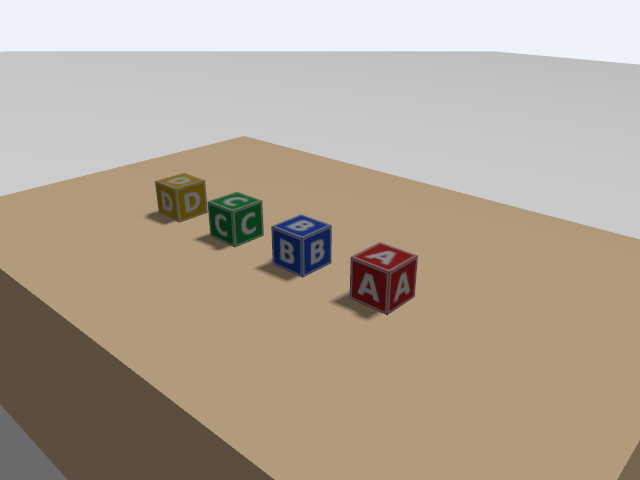
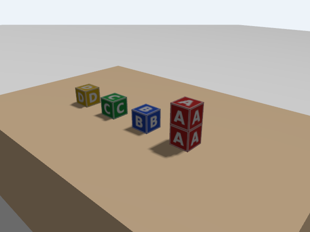

C3 · A table and lettered blocks
Build the lab the arm will work in: a table, four wooden-looking cubes with the letters A to D, and two cameras to look at them.
1. Goal
The course ends with the arm unstacking and stacking lettered blocks (Parts D and E). In this lesson you build the blocks' world and check that its physics is stable: a block must stay where it is put, and a block placed on another must stay on top. At the end you will have:
- written a block as a reusable model (mass, inertia, friction, a letter on each face) and a world that includes it,
- started the lab world and looked at it through a camera inside the simulation,
- checked from ROS 2 that the four blocks rest on the table without drifting,
- added a block while the simulation runs, and seen it stay on top of another.
Everything was run in the course container, headless. The three pictures on this page are not screenshots of the Gazebo window: they come from a camera inside the simulation (--headless-rendering), which is why they could be made without a display. Grasping a block with the arm is not in this lesson, so the friction and mass chosen here are only checked for resting and stacking. Whether they are good enough for the gripper is tested in D2.
2. Concepts
A model in its own folder
In C1 the box was written inside the world file. For four blocks that would be four copies of the same text. Instead, a block is a model in its own folder, and the world includes it:
models/block_A/model.config name and description models/block_A/model.sdf the block: links, inertia, collision, visual models/block_A/materials/textures/block_A.png the picture with the letter
The world refers to it as model://block_A. Gazebo finds the folder through the environment variable GZ_SIM_RESOURCE_PATH, a list of folders to search, like PATH for programs. The launch file of this lesson adds the models folder of the package to it.
Static and dynamic
A static model never moves and costs nothing to simulate: the ground, the table, the cameras. The blocks are dynamic: they have mass and gravity moves them.
Mass and inertia of a cube
A block is 5 cm on a side and weighs 50 g (light wood). The inertia of a solid cube around any axis through its centre is m·s²/6 (s is the side):
I = 0.05 kg × (0.05 m)² / 6 = 2.08e-5 kg·m²
A wrong inertia (too small) makes a body spin wildly when touched; too large makes it sluggish. Use the formula.
Friction
Coulomb friction: the force needed to slide a body is at most μ·N, where N is the force pressing the surfaces together and μ ("mu") the friction coefficient. A block on the table presses with N = m·g = 0.05 × 9.81 = 0.49 N, so with μ = 1 it takes 0.49 N to push it sideways. Two gripper pads each pressing with force F hold the block against gravity when 2·μ·F ≥ m·g, that is F ≥ 0.245 N for μ = 1. A real gripper presses far harder than that; what limits grasping in a simulator is more often the contact solver than the force. The blocks and the table get μ = 1.0.
Collision and visual are separate
As in C1 and the URDF of B1, a link has a collision shape (physics) and a visual shape (looks). Here both are the same 5 cm cube. The letter is only in the visual: the physics does not know that the block says "A".
Cameras in the world
A camera sensor renders the scene from its position and publishes an image. The world needs the Sensors system with a render engine (ogre2), and the simulator must be started with --headless-rendering if there is no window. C4 uses the cameras properly; here they are the way to see what you built.
3. Do it
-
Build the package
host Open a terminal in the
ros2-tutorialfolder and enter a container (this is T1):docker/run_ros2.shhost Open a terminal in the
ros2-tutorialfolder (this is T1).container The package
c3_worlddepends onc2_sim(the launch file of C2), so build and source both:cd code/c2-sim colcon build source install/setup.bash cd ../c3-world colcon build source install/setup.bash -
The block
<?xml version="1.0"?> <sdf version="1.9"> <model name="block_A"> <!-- publish this block's pose, 20 times a second, on /model/block_A/pose --> <plugin filename="gz-sim-pose-publisher-system" name="gz::sim::systems::PosePublisher"> <publish_model_pose>true</publish_model_pose> <publish_link_pose>false</publish_link_pose> <update_frequency>20</update_frequency> </plugin> <link name="link"> <inertial> <mass>0.05</mass> <inertia><ixx>2.08e-5</ixx><iyy>2.08e-5</iyy><izz>2.08e-5</izz><ixy>0</ixy><ixz>0</ixz><iyz>0</iyz></inertia> </inertial> <collision name="collision"> <geometry><box><size>0.05 0.05 0.05</size></box></geometry> <surface> <friction><ode><mu>1.0</mu><mu2>1.0</mu2></ode></friction> </surface> </collision> <visual name="visual"> <geometry><box><size>0.05 0.05 0.05</size></box></geometry> <material> <diffuse>1 1 1 1</diffuse> <pbr><metal><albedo_map>materials/textures/block_A.png</albedo_map></metal></pbr> </material> </visual> </link> </model> </sdf>- The
PosePublisherplugin (as in C1) publishes the block's pose 20 times per second on/model/block_A/pose. This is how ROS 2 will know where each block is (C4). inertialis the mass and the inertia computed above.collisionhas the friction,muandmu2(the friction along the two directions of the surface).- The
visualhas a texture, the pictureblock_A.png, mapped on every face of the cube, so the letter shows on all six faces.
A trap: the texture stays blackWith only the
pbrline the cube is black, in this version of Gazebo. This was tested with the camera: a cube with onlypbr/albedo_maprenders black, the same cube with<diffuse>1 1 1 1</diffuse>added shows the letter. Thediffuseline is not decoration.The other three blocks are the same file with
Areplaced byB,C,D(and a different picture: the course made them with the Python Imaging Library, a coloured square with a white border and letter). - The
-
The world
<?xml version="1.0"?> <sdf version="1.9"> <world name="lab"> <physics name="1ms" type="ode"> <max_step_size>0.001</max_step_size> <real_time_factor>1.0</real_time_factor> </physics> <plugin filename="gz-sim-physics-system" name="gz::sim::systems::Physics"/> <plugin filename="gz-sim-user-commands-system" name="gz::sim::systems::UserCommands"/> <plugin filename="gz-sim-scene-broadcaster-system" name="gz::sim::systems::SceneBroadcaster"/> <plugin filename="gz-sim-sensors-system" name="gz::sim::systems::Sensors"> <render_engine>ogre2</render_engine> </plugin> <gravity>0 0 -9.81</gravity> <scene><ambient>0.6 0.6 0.6 1</ambient><background>0.85 0.9 0.95 1</background></scene> <light type="directional" name="sun"> <cast_shadows>true</cast_shadows> <pose>0 0 10 0 0 0</pose> <direction>-0.5 0.2 -0.9</direction> <diffuse>0.9 0.9 0.9 1</diffuse> </light> <model name="ground"> <static>true</static> <link name="link"> <collision name="collision"><geometry><plane><normal>0 0 1</normal><size>10 10</size></plane></geometry></collision> <visual name="visual"> <geometry><plane><normal>0 0 1</normal><size>10 10</size></plane></geometry> <material><ambient>0.75 0.75 0.75 1</ambient><diffuse>0.75 0.75 0.75 1</diffuse></material> </visual> </link> </model> <!-- the table: a solid box 0.6 m (x) by 0.9 m (y), 0.30 m high; its top is at z = 0.30 --> <model name="table"> <static>true</static> <pose>0.65 0 0.15 0 0 0</pose> <link name="link"> <collision name="collision"> <geometry><box><size>0.6 0.9 0.3</size></box></geometry> <surface><friction><ode><mu>1.0</mu><mu2>1.0</mu2></ode></friction></surface> </collision> <visual name="visual"> <geometry><box><size>0.6 0.9 0.3</size></box></geometry> <material><ambient>0.55 0.4 0.25 1</ambient><diffuse>0.55 0.4 0.25 1</diffuse></material> </visual> </link> </model> <include> <uri>model://block_A</uri> <pose>0.60 -0.18 0.325 0 0 0</pose> </include> <include> <uri>model://block_B</uri> <pose>0.60 -0.06 0.325 0 0 0</pose> </include> <include> <uri>model://block_C</uri> <pose>0.60 0.06 0.325 0 0 0</pose> </include> <include> <uri>model://block_D</uri> <pose>0.60 0.18 0.325 0 0 0</pose> </include> <!-- a camera 1.2 m above the table, looking straight down --> <model name="overhead_camera"> <static>true</static> <pose>0.65 0 1.3 0 1.5708 0</pose> <link name="link"> <sensor name="camera" type="camera"> <camera> <horizontal_fov>1.0</horizontal_fov> <image><width>640</width><height>480</height><format>R8G8B8</format></image> <clip><near>0.1</near><far>5</far></clip> </camera> <always_on>1</always_on> <update_rate>10</update_rate> <topic>overhead_camera/image</topic> </sensor> </link> </model> <!-- a second camera, to the side, looking at the blocks from an angle --> <model name="side_camera"> <static>true</static> <pose>0.15 -0.5 0.62 0 0.43 0.74</pose> <link name="link"> <sensor name="camera" type="camera"> <camera> <horizontal_fov>1.0</horizontal_fov> <image><width>640</width><height>480</height><format>R8G8B8</format></image> <clip><near>0.1</near><far>5</far></clip> </camera> <always_on>1</always_on> <update_rate>10</update_rate> <topic>side_camera/image</topic> </sensor> </link> </model> </world> </sdf>- It is the world of C1 with two more systems:
Sensors(for the cameras), and a scene with a light background. - The table is a static box 0.6 m (x) by 0.9 m (y) by 0.3 m, centred at x = 0.65 m. Its top is at z = 0.30 m, and it spans x from 0.35 m to 0.95 m. The arm will stand at the origin, facing +x, so the table is in front of it.
- The four blocks are
included at x = 0.60 m, y = −0.18, −0.06, 0.06 and 0.18 m (12 cm apart: the open gripper is 8.5 cm wide, so there is room for its fingers). Their centre is at z = 0.325 m: the top of the table plus half a block (0.30 + 0.025). - The two cameras are static models with a
sensor. The overhead one is 1.0 m above the table looking down, the side one looks at the blocks from the arm's side.
- It is the world of C1 with two more systems:
-
Start the lab
The launch file starts Gazebo (server only, running), and the bridge for the clock, the camera images and the four block poses. container T1:
"""The lab world alone (table, four blocks, overhead camera), plus the bridge for the clock, the block poses and the camera. Add gui:=true for the Gazebo window.""" import os from ament_index_python.packages import get_package_share_directory from launch import LaunchDescription from launch.actions import AppendEnvironmentVariable, DeclareLaunchArgument, ExecuteProcess, OpaqueFunction from launch_ros.actions import Node from launch.substitutions import LaunchConfiguration def launch_setup(context, *args, **kwargs): share = get_package_share_directory("c3_world") world = os.path.join(share, "worlds", "lab.sdf") gui = LaunchConfiguration("gui").perform(context) == "true" # -r: run at once; -s: server only; --headless-rendering: the camera renders without a display cmd = ["gz", "sim", "-r"] + ([] if gui else ["-s", "--headless-rendering"]) + [world] bridge_args = ["/clock@rosgraph_msgs/msg/Clock[gz.msgs.Clock", "/overhead_camera/image@sensor_msgs/msg/Image[gz.msgs.Image", "/overhead_camera/camera_info@sensor_msgs/msg/CameraInfo[gz.msgs.CameraInfo", "/side_camera/image@sensor_msgs/msg/Image[gz.msgs.Image"] bridge_args += [f"/model/block_{k}/pose@geometry_msgs/msg/PoseStamped[gz.msgs.Pose" for k in "ABCD"] return [ # model://block_A in the world file is found through this path AppendEnvironmentVariable("GZ_SIM_RESOURCE_PATH", os.path.join(share, "models")), ExecuteProcess(cmd=cmd, output="screen"), Node(package="ros_gz_bridge", executable="parameter_bridge", output="screen", arguments=bridge_args), ] def generate_launch_description(): return LaunchDescription([DeclareLaunchArgument("gui", default_value="false"), OpaqueFunction(function=launch_setup)])ros2 launch c3_world lab.launch.pyWith
gui:=truethe Gazebo window opens instead (it was not tried here). In a second terminal (T2:docker/run_ros2.shin theros2-tutorialfolder) list what is on the ROS 2 side:ros2 topic list/clock /model/block_A/pose /model/block_B/pose /model/block_C/pose /model/block_D/pose /overhead_camera/camera_info /overhead_camera/image /parameter_events /rosout /side_camera/image
-
Look at the lab
The program
save_image.pysubscribes to an image topic, converts the first message to a picture and writes it as a PNG file. It is a small tool (Python only), not part of the lesson's code. container T2:cd code/c3-world source install/setup.bash python3 py/save_image.py /overhead_camera/image /tmp/top.png python3 py/save_image.py /side_camera/image /tmp/side.png[INFO] [...] [save_image]: saved /tmp/top.png: 640x480, rgb8 [INFO] [...] [save_image]: saved /tmp/side.png: 640x480, rgb8
The files are in the container's
/tmp, which disappears when you leave. To keep them, save into/workspaceinstead (the repository folder, which is also on your computer). These are the pictures the course got:
The overhead camera. The arm is at the bottom, out of the picture: the top of the image is +x (away from the arm), and the left side is +y. So the row runs from A on the right (y = −0.18) to D on the left (y = +0.18). 
The side camera: the four blocks A (nearest) to D. The letter is on every face; the shadows come from the light of the world. -
Check that the blocks stay put
The program reads the four pose topics and prints the position of every block once per second of simulated time.
#!/usr/bin/env python3 """Print the position of the four blocks once per second of simulated time, from the poses Gazebo publishes.""" import rclpy from rclpy.node import Node from geometry_msgs.msg import PoseStamped BLOCKS = "ABCD" class CheckSettled(Node): def __init__(self): super().__init__("check_settled") self.pose = {} self.last_print = None for k in BLOCKS: self.create_subscription(PoseStamped, f"/model/block_{k}/pose", lambda msg, k=k: self.on_pose(k, msg), 10) def on_pose(self, k, msg): self.pose[k] = msg.pose.position t = msg.header.stamp.sec + msg.header.stamp.nanosec * 1e-9 if len(self.pose) == len(BLOCKS) and (self.last_print is None or t - self.last_print >= 1.0): self.last_print = t cols = " ".join(f"{b}: {p.x:.4f} {p.y:.4f} {p.z:.4f}" for b, p in sorted(self.pose.items())) self.get_logger().info(f"t = {t:5.1f} s {cols}") def main(): rclpy.init() rclpy.spin(CheckSettled()) if __name__ == "__main__": main()// Print the position of the four blocks once per second of simulated time, from the poses Gazebo publishes. #include <cstdio> #include <map> #include <memory> #include <string> #include <vector> #include <geometry_msgs/msg/pose_stamped.hpp> #include <rclcpp/rclcpp.hpp> class CheckSettled : public rclcpp::Node { public: CheckSettled() : Node("check_settled") { for (char k : std::string("ABCD")) { subs_.push_back(create_subscription<geometry_msgs::msg::PoseStamped>( std::string("/model/block_") + k + "/pose", 10, [this, k](const geometry_msgs::msg::PoseStamped::SharedPtr msg) { on_pose(k, *msg); })); } } private: void on_pose(char k, const geometry_msgs::msg::PoseStamped &msg) { pose_[k] = msg.pose.position; double t = msg.header.stamp.sec + msg.header.stamp.nanosec * 1e-9; if (pose_.size() == 4 && (last_print_ < 0 || t - last_print_ >= 1.0)) { last_print_ = t; std::string line; char buf[96]; for (const auto &[b, p] : pose_) { std::snprintf(buf, sizeof buf, " %c: %.4f %.4f %.4f", b, p.x, p.y, p.z); line += buf; } RCLCPP_INFO(get_logger(), "t = %5.1f s%s", t, line.c_str()); } } std::vector<rclcpp::Subscription<geometry_msgs::msg::PoseStamped>::SharedPtr> subs_; std::map<char, geometry_msgs::msg::Point> pose_; double last_print_ = -1.0; }; int main(int argc, char **argv) { rclcpp::init(argc, argv); rclcpp::spin(std::make_shared<CheckSettled>()); rclcpp::shutdown(); return 0; }container T2:
ros2 run c3_world check_settled.pyros2 run c3_world check_settled[INFO] [...] [check_settled]: t = 8.2 s A: 0.6000 -0.1800 0.3250 B: 0.6000 -0.0600 0.3250 C: 0.6000 0.0600 0.3250 D: 0.6000 0.1800 0.3250 [INFO] [...] [check_settled]: t = 9.2 s A: 0.6000 -0.1800 0.3250 B: 0.6000 -0.0600 0.3250 C: 0.6000 0.0600 0.3250 D: 0.6000 0.1800 0.3250 ...
The first time (8.2 s here) depends on how long you waited. The positions are those of the world file, z = 0.3250 to four decimals, and they do not change from line to line: the blocks rest on the table. (A closer look at one pose, with
ros2 topic echo /model/block_A/pose --once, shows z = 0.32499942: the block sinks 0.6 micrometres into the table, the solver's contact tolerance. Orientations are identity.) The header of the pose hasframe_id: lab, the name of the world, which is the frame these coordinates are in. Press Ctrl+C. -
Add a block while it runs, and make a tower
A model can also be created in a running world.
ros_gz_sim createreads a model file and adds it under a new name. Drop a second block on top of A. Its centre will rest 5 cm above A's centre, at 0.325 + 0.05 = 0.375 m, so start it 4.5 cm higher, at z = 0.42 m. container T2:ros2 run ros_gz_sim create -file $(ros2 pkg prefix c3_world)/share/c3_world/models/block_A/model.sdf -name extra -x 0.6 -y -0.18 -z 0.42 sleep 3 gz model -m extra -p[INFO] [...] [ros_gz_sim]: Entity creation successful. Requesting state for world [lab]... Model: [...] - Name: extra - Pose [ XYZ (m) ] [ RPY (rad) ]: [0.600000 -0.180000 0.375000] [0.000000 0.000000 0.000000]It fell 4.5 cm, landed on A, and stays at z = 0.375000, with orientation zero: the stack is stable. (The test run read the same pose 1 s, 4 s and 10 s after the spawn: no change.) The side camera, again:

The side camera after the spawn: a tower of two A blocks. The new block is a copy of A, so it also says A. Remove it again (the service of the world, from C1's family):
gz service -s /world/lab/remove --reqtype gz.msgs.Entity --reptype gz.msgs.Boolean --timeout 2000 --req 'name: "extra" type: MODEL' gz model --listdata: true Requesting state for world [lab]... Available models: - ground - table - block_A - block_B - block_C - block_D - overhead_camera - side_cameraThe model list is back to the eight models of the world file. The service name contains the world's name,
lab.
4. Check
ros2 topic listshowed the camera and the four block pose topics.- The two pictures show the table and four lettered blocks, letters readable.
check_settledprinted the same z = 0.3250 for every block, line after line.- The spawned block rested at z = 0.375000 on top of A.
5. Exercise
Spawn a second block named extra2 on top of extra (a tower of three). Where does its centre rest? Predict it, then drop it from about 4.5 cm above that.
Answer
Each block adds its height, 5 cm: the centres are at 0.325, 0.375 and 0.425 m. Run the spawn of step 7 twice with the names extra and extra2, the second at -z 0.47 (4.5 cm above its resting height) after the first has landed. It was run: extra rested at 0.375000 and extra2 at 0.425000, still there 6 s later, with the lower block unmoved.
ros2 run ros_gz_sim create -file $(ros2 pkg prefix c3_world)/share/c3_world/models/block_A/model.sdf -name extra2 -x 0.6 -y -0.18 -z 0.47
sleep 3
gz model -m extra2 -p6. Recap
- A reusable thing is a model in a folder (
model.config,model.sdf, textures); a world pulls it in with<include><uri>model://name</uri>.GZ_SIM_RESOURCE_PATHtells Gazebo where to look. - Dynamic bodies need a realistic
massandinertia(a cube:m·s²/6) and a friction coefficientmu. Static models (ground, table, cameras) cost nothing. - In this Gazebo a texture needs
<diffuse>1 1 1 1</diffuse>next topbr/albedo_map, or the cube is black. - A
PosePublisherplugin in a model gives its pose on/model/NAME/pose; the bridge turns it into aPoseStamped, with the world name as the frame. - A camera in the world, with
--headless-rendering, makes pictures without any window. - Blocks at rest keep their z to a micrometre, and a stack of three stays up. Not tested here: grasping them (D2) and the Gazebo window.